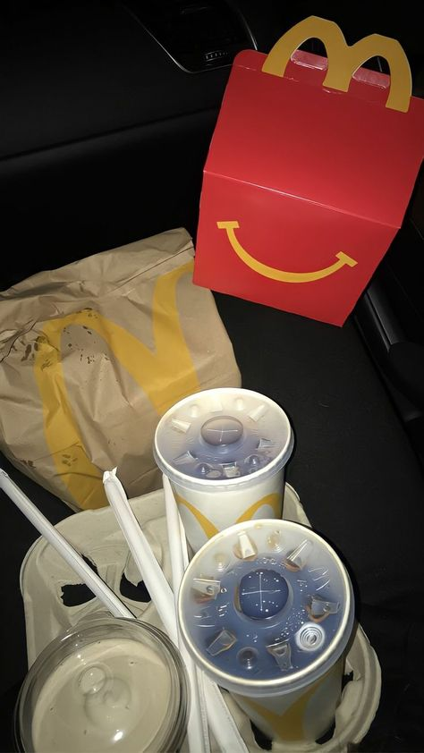
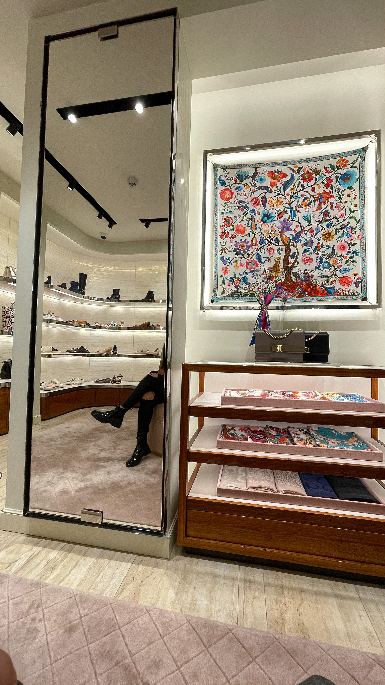

Hobbies
Esta seccion se la dedicare a mis hobbies o posatiempos que mas anheloHOBBIES
Sinceramente me gusta mucho la comida y lo que solia hacer es un hobbie para mi, pues todos los fines de semana salia con mi mama a probar comida en distintos restaurantes de la zona
Ropa
Otra actividad que anhelo mucho es salir con mi madre de shoping pues de igual manera todos los fines de semnaa saliamos de compras y aun que a veces no comprara nada, disfrutaba estar con ella